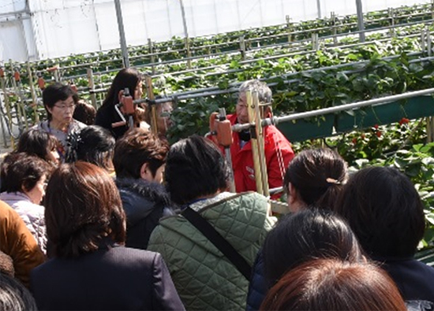
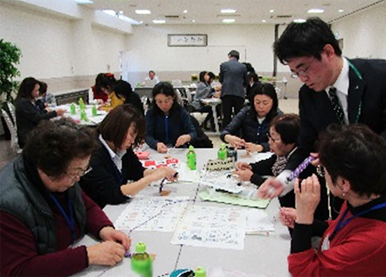
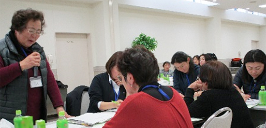

第24回 JA埼玉県女性組織協議会との早春交流会報告
防災ブレスレットづくりや日頃の活動を交流
2月18日（月）10時30分より、むさしの村（加須市志多見）さくらホール・農園にて、交流を通して、地域でのつながりを強め、豊かな地域社会づくりのきっかけづくりの場とすることを目的に、JA埼玉県女性組織協議会と埼玉県生活協同組合連合会会員生協組合員との第24回早春交流会を開催しました。（担当：JA埼玉県女性組織協議会）
- 参加：
- JA女性組織協議会21人（事務局3人）、埼玉県生協連18人（コープみらい13・パルシステム埼玉1・医療生協さいたま1・県生協連1・事務局2）合計39人
JA埼玉県女性組織協議会（以下、JA女性協）と埼玉県生協連組合員との早春交流会は、今年で24回目を迎えました。今回はJA女性協が企画運営を担当して、午前中はむさしの村農園でのいちご狩り、さくらホールでの防災ブレスレットづくりをおこないました。午後は各団体の活動報告の後、6つのグループごとに日頃の活動や「食品等の商品開発について」意見交換や交流をおこないました。
1. 開会
開会にあたり、JA女性協会長の栗嶋美津江さんから「JA女性協はJAの一員として、地域農業の発展や食料の安全供給、住みよい地域社会づくりに貢献していきます。交流会では、協同組合の仲間としてさまざまな視点から意見を出し合って大いに交流しましょう」とあいさつがありました。埼玉県生協連の大久保美紀理事は「生協の活動とJAの活動は共通している部分があります。意見交換を通じて今後の活動に生かしてほしい」と話されました。
2. いちご狩り・防災ブレスレットづくり
むさしの村農園でのいちご狩りでは、生産者による栽培方法や品種についての説明を聞いた後、「紅ほっぺ」「あきひめ」の2品種のいちごを堪能しました。
次に、さくらホールに戻り、防災ブレスレットづくりにとりかかりました。JA埼玉県中央会職員の堀口さんが講師となって、アウトドアコードを使って、万一の時にはほどけて紐になり、応急手当や荷物の固定などに使える防災ブレスレットを作りました。参加者は、防災時の行動なども思い浮かべながら、グループで助け合いながらブレスレットを完成させていました。


3. 活動報告と交流
昼食後、JA女性協・各生協の活動について資料をもとに報告をおこない、その後6グループで交流をすすめました。「食品等の商品開発について」意見交換や交流、日頃の活動の交流をおこないました。最後に、各テーブルから報告をおこない共有しました。報告の中では、いちご狩りをヒントにした加工品作りの提案なども出され、参加者からはお互いの活動や商品などについて知ることができてよかったなどの声が寄せられました。
